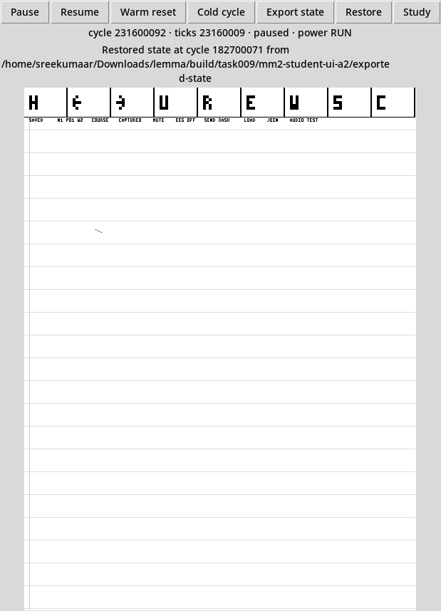

The maintained controller and Lean service now play4099 arbitrary signed16 samples through the ordinary Student AUDIO TEST. The actual guest sends nine bounded packets through a2048-sample owned ring, wraps/refills it and finishes at the exact ending. A second run mutes after452 consumed samples. All4551 actual controller-output values and positions match the authored waveform, with6250-tick spacing within each segment. The earlier70-sample failure remains preserved: its sequential counter readings incorrectly assumed simultaneous values. The corrected guest and its four strict audits have separate identities. The receipt index records those boundaries and the remaining product gates.
Controller ABI2 owns each outstanding read through completion or cancellation. It shares the existing memory port fairly with record-DMA writes, checks output permission again at read completion and playback, and preserves accepted, fetched, FIFO-submitted and consumed counters separately. The kernel supplies a resolved private frame; users cannot supply a physical DMA pointer. Service3 admits bounded copied packets and raw owner-bound counters. The maintained User service prefills2048 samples, refills through its normal pump and requests an exact4099-sample ending. MUTE revokes before observing the final known prefix. Legacy controller ABI1 and the sixteen-sample service2 fallback retain their identities.
The explicitly selected native MM2 continuation edition is now admitted as lemma-silicon-fast-mm2-softtlb/0.1.0. Normal Student Export/Restore executes with the sealed school23-mm2-native-logical2-a1 bundle, manifest fed8d8278e727a36e2fbe1aa4067c6655aa2a4f1389dffc2e3a8ec4478cc90a3. The regular school23-mm2-native-a4 bundle retains checkpoint admission false. Older bundles and private qualification receipts keep their original false flags. Both current editions use the exact audited warm-SEND guest and unchanged p81 native runtime; neither package compiles target or C code.
The new545-input source archive school23-mm2-source-a10, inventory a79ae7b47f1a5bea37648486e15b88ab79b869d1526c1bd330276e93e49aa6d4, binds Notebook d4855f51de2a6c84e6f18af0c6892270f1999ee7cdc1e52d508b70d13d3cb756. Genuine four-role Lean/LLVM production took951.465s. The final authority-only refresh reused every payload artifact and changed only the two audit helpers and typed role pins. All four strict audits pass520.676s. Original immutable-Nix pre-action failure and typed-catalog audit failure remain retained. Consequential source and LLVM mutations qualify the new wrapper→attempt→original-source admission, pending retry and exact CRC/context checks; no controller or phase domain widened.
Actual ordinary Student Tk controls now execute AUDIO TEST, Pause, Export state, Resume and Restore. The exact active-ring cut at182,700,071 cycles restores after a changed600,000-cycle suffix, preserving the old backing. A new pointer stroke reaches durable frontier5 with every nine-word sample equal to actual controller sequence/epoch acceptance. That54.041s run stops after durable421 while the visible header still says PENDING; it does not establish completed Saved pixels. A separate fresh Student session reopens that exact exported state, draws and Saves through ordinary controls, then waits48,900,021 cycles for the literal completed SAVED footer in both controller pixels and the native viewer. It passes28.792s at254.5MB, within the original150M suffix and300s/1GiB/3GiB limits. All owners are reaped and observed sources remain unchanged.

UART420 initializes the guest before the first optical frame completes. Durable421 can precede the later Saved header tile. The observer keeps acceptance, target, completion and visible presentation separate: the first blind AudioTest tap failed at the original bound while the panel was still white; that failure is retained. The qualified run waits for completed visible paper before selecting the actual control. Native status reports machine state and persistent Export/Restore operation results; it does not label UART420 as Ready.
Successful state adoption alone detaches School credentials and tablet handles and advances the presentation generation. A rejected candidate retains the original PID, backing and authority. held_cancel=1 capture and candidate cuts refuse before mutation; a safe earlier state can still restore from an unsupported current cut. The finite actual cancel search ended NOT_ENCOUNTERED. The additive maintained relation3 compares complete ABI2 ring and logical state, excluding only the two named inherited host CPU clock offsets; legacy relation2 remains separate. Native presentation here is paper plus a generation-specific raw PCM audit file, with no audible speaker sink or external acquisition/transmission permissions revived by restore.
| Fresh observation | Result and scope |
|---|---|
| Joint receipt2, assistance and PCM completion successor | The final545-input archive 03914f7cea4a400cc3761f8fe7974f76b300db7a9e14a3abd3c21b1c3aadbcd6 binds deferred Saved receipts, assistance writeahead and the PCM final-consumption edge. Genuine changed-target builds take171.269s,117.269s,126.080s and120.650s; final provenance refreshes reuse those actions. All four fresh strict audits pass in433.980s whole at669MB combined sampled peak. A separate exact receipt2 saturating-body gate preserves legacy admission; its original failed audits remain retained. Native bundle school23-mm2-native-a3, manifest 5041fb9f71b6ab18749d1f438ff26f9199306c6fe7ee53e8c372263c11c97b8b, seals1996 files in13.610s. Actual Student Ready by400M and explicit Saved at500,000,001 pass without guest fault. Its actual10.161B-unit native workflow and final4099-sample PCM are terminal; all4099 values, positions and6250-tick spacing match with four counters4099 and gaps0. These03914f receipts predate the warm-SEND repair. |
| Controller C/RTL | 20.557s; C20,003-sample wrap/refill/EOF model and RTL1027 samples,257 reads,6,412,537 cycles. Held-owner, fairness, mute, expiry and read-failure cases pass. ABI1 regression separately passes15.045s. These are synthetic component observations. |
| Original f869 guest cohort | Notebook233.142s, initializer207.120s, Integrated15205.708s and Integrated16207.489s. Final unchanged-action receipt refreshes take10–13s each. Strict source/LLVM/object/ISA/memory/capability audits all pass, with340.748s longest audit and727MB combined sampled peak. Source archive544 inputs: f869ec709ac43cf919d8701959dc550b4de5ed0f9e0974a7183901332c585ba1. |
| Causal-order successor | Only User status-read order changed: consumed, submitted, fetched, then accepted. Actual Actions14cases pass89.616s, including advancing counters and a consequential old-order failure. Genuine Notebook178.240s, initializer115.449s, Integrated15125.748s and Integrated1698.780s builds pass. Final544-input archive 43be9f8470f4386faab107d3195011e1fb2e57a2d457b54fcb87c3b4866a0dc6 retains original receipts; strict audits all pass in412.066s whole at639MB combined sampled peak. Native bundle school23-mm2-native-a2 seals1993 files in18.177s; manifest b74bfc0bd75c6e6c6e69e9215715d04432e6b4403a70421328550b11d51310ab. ActualStudent4099 playback now passes29,000,007 functional units in1.525s; partialMUTE452/468 consumed/submitted also passes. All4551 controller-output samples are independently checked. |
| Native QEMU successor | One dependency-affected hardware object and a real link after a byte-identical retained baseline;1456 retained objects/archives. Installed ELF 4f052aaf5497b84046d93c08f475bab4f0665babf5fe1f9cc6ddb7b02398b729. |
| Browser QEMU/TCI successor | One fresh hardware object and real Wasm link in35.282s;1046 retained objects,487.8MB sampled peak. Wasm eff3f3600f5d3f062aca5f0ab1f7d5498ef7dfdb457bcb6cc0cf5e9f12eb820c. Twelve coherently rehashed admission corruptions are rejected. Actual browser interaction remains a separate consumer observation. |
The full lemma-silicon-dev/0.16.0 profile preserves every0.15 union field and adds ABI2. Its real SoC wires the new DMA read-data path and selected full-capacity IHP SRAM pen. The initial258-input native archive omitted the0.15 JSON read by0.16 validation, so normal prepared-machine admission failed. That original result remains unchanged and its complete-closure claim is withdrawn. The builder now captures this validation dependency; a separate259-input full build passes in81.565s at1.225GB sampled peak. The separately bound physical lock still has failing process/timing/padding qualifications. Compilation does not establish physical closure.
Fast and TCI use the explicitly named lemma-silicon-fast-mm2-subset/0.1.0 on profile0.14, rather than claiming the full0.16 union. Native bundle build/task009/school23-mm2-native-a1 inventories1993 files and the compiler-produced sample course; manifest SHA256 ecfe8921ed8b47bd16f14fc2e4d76ee58e8c7fa50d4e07595e08ce707afaf5a7. Both normal preparation and packaging succeeded. Their wrapper's last observer used the wrong argument count and failed; a separately retained corrected normal admission passed in1.667s without rebuilding or changing the bundle. The guest's failed playback result remains attached to that old bundle. The corrected native-a2 has a separate source and actual successful waveform assessment.
The new full-profile image packager requires the exact configuration/profile pair. An actually audited0.16 image packages with the unchanged Product10 compatibility ABI and2973-byte base descriptor, below the3072-byte limit. Wrong0.15/0.16 substitutions and a Fast-only image are rejected. The canonical reproduction observer accepts an explicit --profile lemma-silicon-dev/0.16.0; the retained IntegratedKernel beacon15 describes the compatible guest interface, while the native profile and compiled image configuration are checked separately. Preparation and packaging alone are not execution. The separately retained original03914f canonical run now passes actual factory ROM/NV authentication, Ready674M cycles, pen/Save69M and reset200k: total743.2M cycles in6654.458s. Independent closed recovery binds all nine raw fields, linked artifact/index/root publication and unchanged acknowledged bytes after reset. It does not qualify the warm guest on full16, independent cold reopen, enabled economy acquisition or wired/radio traffic. The wrapper did not publish a terminal status; its stale RUNNING receipt remains unchanged while the actual observer result and closed cleanup assessment are terminal.
nix-shell tooling/silicon/sim.nix --run 'python3 scripts/check_multimodal_controller.py --controller-abi 2 --work-dir build/UNUSED' python3 scripts/lemmasim build --backend qemu --profile lemma-silicon-dev/0.14.0 --controller-binding mm2-subset --workload school-notebook --guest-build build/kernel/task009-school23-notebook-a31 --guest-source-root build/task009/school23-mm2-source-a10 python3 scripts/check_integrated_boot.py --profile lemma-silicon-dev/0.16.0 --prepared build/task009/integrated16-auth-prepared-a2 --package EXACT_NEW_IMAGE --tag EXACT_NEW_IMAGE/slot0.tag --factory-boot EXACT_HOSTED_LEAN_FACTORY_BACKING --user-medium EXACT_GUEST_INITIALIZED_MEDIUM --work-dir build/UNUSED
The last command requires separately produced exact image/tag/factory inputs and a new prospective execution budget; it is not a completed execution receipt. Explicit native MM2 continuation is admitted only within its versioned exact-binding guards and finite qualification. Actual03914f held-read/MUTE and nonzero Math-scope pending-WAL suffixes have separate source-bound equality receipts. The original WAL observer imported ABI1 and failed; its corrected assessment consumes both existing suffixes with the exact MM2 relation and runs no guest again. Public Student UI qualification uses the newer warm guest. Browser exact continuation and arbitrary-cut/cross-backend claims remain unsupported. Full image frames, continuous explanation audio, the3,902,720B/s economy workload, physical sensor/transducer behavior, safety and educational benefit remain unqualified. The ordinary sensor-disabled school and notebook remain separate maintained consumers; the controller extension does not grant Student injection or assessment authority.